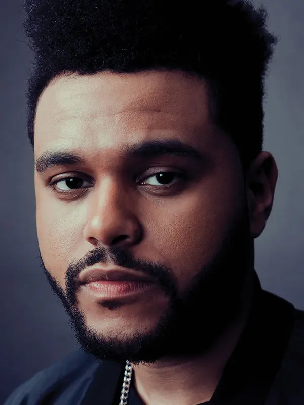

Картинка певца

Карьера певца
В 2013-м выпускает дебютный студийный альбом Kiss Land, в поддержку которого были выпущены синглы «Kiss Land» и «Live For». Его второй альбом получил название Beauty Behind the Madness и стал его первым альбомом, получившим первое место в чарте Billboard 200, включая вошедший в топ-5 сингл «Earned It» и попавшие на первое место синглы «The Hills» и «Can't Feel My Face». Песни одновременно удерживали первые три места в чарте Billboard Hot R&B Songs, сделав его первым артистом в истории, добившимся этого[4]. Тесфайе выиграл две премии «Грэмми» и был номинирован на премию «Оскар»[5]. В сентябре 2016 года был анонсирован релиз третьего альбома под названием Starboy и выпущен заглавный сингл «Starboy», который впоследствии попал на первое место чарта Billboard Hot 100. Релиз альбома Starboy состоялся 25 ноября 2016 года[6]. Альбом дебютировал с первой строчки чарта Billboard 200, возглавил iTunes 80 стран, а также установил рекорд Spotify по количеству прослушиваний за сутки[7].